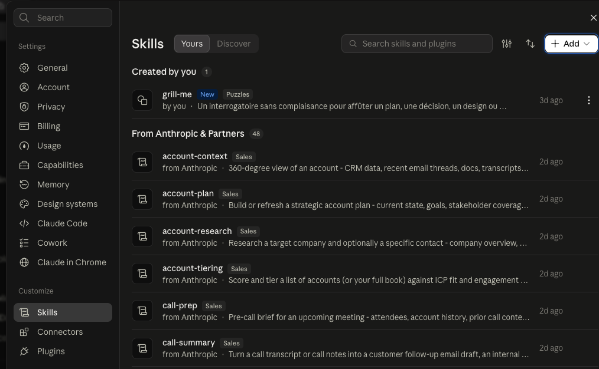
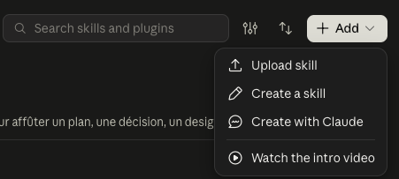

De zéro à votre premier skill qui tourne, même si vous n'avez jamais ouvert un terminal. Chaque étape montre la commande à taper et ce que vous devez voir à l'écran.
Un skill est un fichier d'instructions (SKILL.md, du markdown
lisible par un humain) que votre agent IA charge quand la tâche correspond.
Vous ne codez rien : vous placez ces fichiers là où votre outil les cherche,
et c'est tout. Quand vous direz « nettoie ce repo », l'agent lira le protocole
de cleanup-pass et le suivra au lieu d'improviser.
Ce que l'installation fait concrètement : elle télécharge le dépôt
une fois, puis crée des liens vers ses skills dans trois dossiers standards
(~/.claude/skills pour Claude Code, ~/.agents/skills
pour Codex, ~/.cursor/commands pour Cursor). Un seul exemplaire,
tous vos outils le voient.
Il vous faut un terminal et git. Sur Mac, ouvrez l'application
Terminal (⌘ + espace, tapez « Terminal », Entrée). Puis vérifiez git :
git --version
~ $ git --version git version 2.44.0
Deux commandes. La première télécharge le dépôt dans votre dossier courant, la seconde entre dedans et lance l'installeur :
git clone https://github.com/Aximande/agent-skills.git cd agent-skills && ./install.sh
~ $ git clone https://github.com/Aximande/agent-skills.git Clonage dans 'agent-skills'... Réception d'objets: 100%, fait. ~ $ cd agent-skills && ./install.sh ✓ /Users/vous/.claude/skills/cleanup-pass ✓ /Users/vous/.agents/skills/cleanup-pass ✓ ~/.cursor/commands/cleanup-pass.md … même chose pour chacun des 11 skills … ✓ ~/.cursor/commands/spec-lite.md
Ouvrez (ou rouvrez) une session de votre agent dans un projet, par exemple Claude Code, et tapez le nom d'un skill précédé d'un slash :
~/mon-projet $ claude > /cleanup-pass cleanup-pass — Repasse de nettoyage sur un repo fonctionnel…
Lancez /cleanup-pass sur un vrai projet pour voir la mécanique.
Voici à quoi ressemble un run, et ce que chaque moment veut dire :
> /cleanup-pass Préflight : 42 tests verts, build OK. Baseline posée. ① le skill relève d'abord l'état de VOS tests : c'est son filet Passe 1 : dead code retiré dans utils.py (−38 lignes)… Gate : tests 42/42 verts, build OK → commit. ② chaque changement n'est commité que si vos tests restent verts Rapport : 2 propositions non commitées dans .cleanup/ (refactor risqué → à vous de décider) ③ ce qui ne peut pas être prouvé part en rapport, jamais en commit
Trois choses à retenir : le skill montre son filet avant de toucher quoi que ce soit, chaque commit est gaté par vos propres tests, et ce qui est risqué finit en rapport pour votre décision, pas en modification silencieuse. Tous les skills du dépôt suivent cette même logique.
/safety-net : il pose d'abord un filet de tests de caractérisation,
puis cleanup-pass peut travailler./cleanup-pass : la
commande apparaît et pointe vers le skill.~/.agents/skills/,
le dossier du standard agentskills.io.skills/cleanup-pass → Compresser.

Lis ce document et exécute-le exactement comme prescrit, du préflight à la livraison, sans sauter d'étape.
SKILL.md à ses fichiers.
Le skill s'applique alors à toutes les conversations du projet.| Skill | Outil | Installation |
|---|---|---|
proof-run, fluid-pass, react-doctor |
pilotage de la vraie app web | agent-browser |
ship-check | scan de secrets | brew install gitleaks |
doc-ingest | conversion de documents | uv (markitdown est lancé via uvx) |
react-doctor, fluid-pass | doc à jour de React et des libs | MCP Context7 |
excalidraw-slides | accès à Excalidraw | connecteur MCP Excalidraw+ ; sans lui, le skill produit un fichier
.excalidraw à importer sur excalidraw.com |
Sans l'outil, le skill vous le dit au préflight et bascule en mode dégradé quand c'est possible, au lieu d'inventer un résultat.
Mettre à jour : les skills sont des liens vers votre clone, donc une seule commande met tout à jour, pour tous les outils :
cd agent-skills && git pull
Désinstaller : supprimez les liens (vos autres skills ne sont pas touchés, on ne supprime que ceux de ce dépôt) :
cd agent-skills for s in skills/*/; do n=$(basename "$s"); rm -f ~/.claude/skills/"$n" ~/.agents/skills/"$n" ~/.cursor/commands/"$n".md; done
| Symptôme | Cause probable et remède |
|---|---|
« permission denied » au lancement de ./install.sh |
Le fichier n'est pas exécutable : chmod +x install.sh puis relancez. |
| Le skill n'apparaît pas dans Claude Code | Les sessions ouvertes ne rechargent pas les skills : fermez et rouvrez.
Vérifiez le lien : ls ~/.claude/skills/ doit lister les 11 noms. |
| Votre outil ne suit pas les liens symboliques | Relancez avec une copie réelle : ./install.sh --copy
(à refaire après chaque git pull). |
git clone échoue (réseau d'entreprise, proxy) |
Téléchargez le ZIP depuis GitHub (bouton Code → Download ZIP),
dézippez, puis lancez ./install.sh dans le dossier. |
| L'agent ignore le skill et improvise | Les skills se déclenchent sur demande explicite : nommez-le (« passe cleanup-pass ») ou utilisez le slash. C'est voulu : une repasse sanctionnée, pas un réflexe permanent. |
Un cas non couvert ? Ouvrez une issue.
Derrière ces skills : Alexandre Lavallée.
Pour en savoir plus, ou pour travailler avec moi :
alexandrelavallee.com